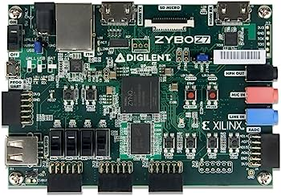

Lab 0 - Introduction to Software Defined Radio
Software Defined Radio (SDR) is like a radio communication system where components that have been traditionally implemented in hardware (like mixers, filters, amplifiers, modulators/demodulators, detectors, etc.) are instead implemented by means of software on a personal computer or embedded system.
To understand this, let’s consider an analogy.
Think about how you might adjust the settings on your TV or your music system. Normally, you would push a button or turn a dial. Now, imagine if you could do that with a software on your computer or phone. You could change the volume, switch channels, adjust the brightness, etc., and all of this without ever touching the TV or music system.
That’s a bit like what software-defined radio does. The “settings” of the radio–like which frequency to tune into–are controlled by software. This means you can use the same piece of hardware to listen to FM radio, shortwave, Wi-Fi signals, etc., just by changing the software.
The beauty of SDRs is their flexibility. With the right software, an SDR can become virtually any radio device you need. This makes them useful in many areas of technology and communication.
Platform Background
Field Programmable Gate Array (FPGA)
An FPGA, or Field-Programmable Gate Array, is like a massive box of electronic Lego bricks in a small chip. Just as you can assemble Lego bricks in countless ways to build houses, cars, spaceships, etc., you can configure the “bricks” (digital logic blocks) inside an FPGA to perform a wide variety of tasks, such as digital signal processing, pattern recognition, complex calculations, and so much more. Each of these digital logic blocks can be thought of as a tiny machine that does a simple task. Some might do basic arithmetic like addition, some might store data (like a small memory), while others can make decisions (like choosing a different path based on certain conditions). The “Field-Programmable” part of the name means that you can program, or configure, these logic blocks to do what you want them to do while the FPGA is in use, or “in the field”. This is different from other kinds of hardware devices, which are usually designed for a specific purpose and can’t be changed after they’ve been manufactured. You can imagine that you are the foreman of a giant construction site, where the FPGA is the site and the digital logic blocks are the workers. As the foreman, you get to decide what each worker (logic block) does, how they communicate with each other, and in what order they do their tasks. This gives you a lot of flexibility to construct complex systems tailored to your specific needs. FPGAs are often used when a task is too complex for a regular processor, or when you need a lot of processing power but want to keep the power consumption low.
An example hobby board (Zybo), the FPGA is the small chip in the center with several peripherals attached to it, i.e. HDMI port, LEDs, etc..
FGPAs are programmed using Hardware Descriptions Languages (HDLs). You can think of a hardware description language (HDL) as a blueprint for a building. Let’s say you want to build a house. Instead of just starting to build, you’d first create a detailed plan that includes the size and shape of each room, where the doors and windows will go, and how the plumbing and electrical systems will be arranged. This plan helps you visualize the final product, communicate your ideas to others, and guide the construction process. In the world of digital electronics, an HDL serves a similar purpose. When engineers design complex digital systems - like a computer processor or an FPGA - they use an HDL to describe what they want to build. This could include details about the logical operations the system will perform, how data will move through the system, and how different parts of the system will interact with each other. The two most common HDLs are VHDL and Verilog. Just as different architectural styles can be used to design buildings, these different languages can be used to design digital systems. Each has its own syntax and conventions, much like programming languages. Once the design is described in an HDL, special software tools can convert this high-level description into a low-level representation that directly controls the digital hardware. This is similar to how a construction crew uses a blueprint to guide the actual building process. So, to sum it up: An HDL is a language used by engineers to describe, simulate, and test the behavior and structure of digital systems before they’re built. The following are excellent tutorials/references for Verilog and VHDL, respectively:
Zynq
AMD Xilinx platforms are the key technology to our SDR design. In particular, the design paradigm of a Zynq System-on-Chip (SoC) will be used extensively, if unfamiliar, please utilize the following text to learn more and follow the accompanying tutorials.
http://www.zynqbook.com/download-tuts.html
While these are for a previous generation of chip, they still provide an excellent introduction to the overall technology.
Note: The book is a couple years old and AMD Xilinx has updated its set of tools, Vivado persists as the main IDE for programming the Programmable Logic (PL), but instead of Xilinx SDK, you’ll you Vitis. Similarly, instead of Vivado HLS you’ll use Vitis HLS. Just keep this in mind when getting to the various sections calling for these tools.
RF System-on-Chip
The more specific design series from AMD Xilinx is the RF System-on-Chip (RFSoC). These devices possess both a hardened processor along with Analog-to-Digital Converters (ADC) and Digital-to-Analog Converters (DAC) in addition to other features. The following text provides an excellent introduction to the features of these devices:
Task 1
Note
Estimated Time to Complete: 6-9 hours
Complete the Zynq Ultrascale+ MPSoC Embedded Design Tutorials at
Resource files found here:
You may skip the sections Building and Debugging Linux Applications, Boot and Configuration, and Secure Boot for now. Note that in the first tutorial where you build a project, Zynq UltraScale+ MPSoC Processing System Configuration with the Vivado Design Suite, after the step to Create HDL Wrapper, click on Generate Bitstream to start this process, it will take several minutes. While the tutorial is correct that there is no PL design in this first project, the team has had issues building the project in Vitis without doing the Generate Bitstream step.
Task 2
Note
Estimated Time to Complete: 80-120 hours
Complete the Zynq Book tutorials (http://www.zynqbook.com/download-tuts.html) for the listed sections. Some are similar (or repeats) of Task 1, iteration is key to learning the workflow.
[ ] 1A: There may be differences in the newer versions of Vivado
[ ] 1B: Use the
Zynq MPSoC Processing System, not theZYNQ7 Processing System. These tutorials were made for the previous version.[ ] 1C: Xilinx SDK is replaced with Vitis, use this in place.
[ ] 2A:
[ ] 2B:
[ ] 2C:
[ ] 2D:
[ ] 3 (optional): Vivado HLS is now replaced with Vitis HLS.
[ ] 4A
[ ] 5A